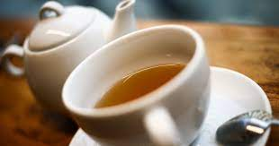

Чай з печеням - це не просто стереотип. Якщо запитати когось про суто британські традиції, майже всі тут-таки пригадають чаювання. Словом “cuppa” (/ˈkʌpə/) зазвичай називають чашку чаю, оскільки при вимові фраза “cup of tea”, звучить як “cuppa tea”. Насправді так і є, скромна чашка чаю лежить в основі більшості прикладів соціальної взаємодії в Британії.
Більшість британців п'ють чай на сніданок, потім під час перерви на роботі, перед тим як лягати спати, чай, коли приходять в гості сусіди, чай під час зустрічей, чай для того, щоб розібратися зі своїми проблемами.... Ну, ви зрозуміли. Давайте також не забувати про чудову британську традицію “dunking” («замочування»), коли солодке печиво вмочують у чай перед тим, як його з'їсти. До речі, одна з найпопулярніших тем для всенародного обговорення – яка марка печива підходить найкраще для замочування.
